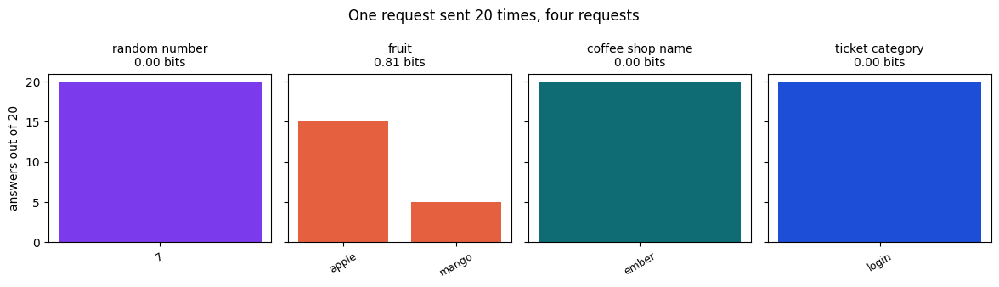

Given a sequence of tokens, a language model computes a probability for every token that could come next. Generation runs that computation in a loop: score the vocabulary, convert the scores to probabilities, sample one token, append it and repeat. Identical requests diverge at the sampling step, and the Messages API exposes none of the probabilities, so a request's behavior has to be measured from its outputs.
A reply is one sample from a distribution, so you learn how a request behaves by sending it more than once.
Text arrives as tokens
A common word is often a single token, and a rare word, a date or an emoji is split into several. The API doesn't
return the pieces, but its count_tokens endpoint reports how many tokens a request holds without
running the model, so comparing short strings shows how they split. The notebook counted six one-string
requests to Claude Sonnet 5.5.
| String | Input tokens | Compared with cat |
|---|---|---|
cat | 10 | +0 |
billing | 10 | +0 |
unbelievably | 13 | +3 |
Kubernetes | 14 | +4 |
2026-11-11 | 14 | +4 |
🙂 | 11 | +1 |
Every count includes the same fixed overhead of the request's format, so the differences carry the information. billing splits into as many tokens as cat. unbelievably needs three more, and Kubernetes and the date four more each. A word count is a poor guide to a token count, and token counts set both the context a request fits in and what it costs, which Chapter 3, Tokens, context and cost, measures. The first book's NLP & Large Language Models tokenizes text and computes a softmax by hand in its notebook.
Generation runs as a loop
Generation is a loop around one computation. The model takes the text so far as tokens, scores every token in
its vocabulary, turns the scores into probabilities and samples one. That token is appended and the loop runs
again on the longer text. It stops when the model samples its end-of-turn token, which the response reports as
the end_turn stop reason, or when the reply reaches the request's max_tokens,
reported as max_tokens.
Every later token is conditioned on the ones before it, so one different choice early in a reply can change everything after it. The thinking tokens Chapter 1 measured come from the same loop. The model samples them before the visible answer, and they are billed as output.
Temperature reshapes the probabilities
The step from scores to probabilities is the softmax function. Each score is divided by the temperature, exponentiated and divided by the sum of all the exponentiated scores, so every probability is positive and they add to 1. A temperature below 1 widens the gaps between scores and raises the leading token's share. A temperature above 1 narrows the gaps and spreads the probability out.
The Messages API returns none of these scores. As of November 2026, the API version the book's SDK sends,
2026-10-21, also rejects the temperature, top_p and top_k
fields on every model, so each request samples at the model's default settings. The figure therefore works on
five illustrative scores for the word after “The package arrived”, put through the notebook's
softmax.
At temperature 0.5, today takes 0.59 of the probability. At 1.0 its share is 0.41 and at 2.0 it is 0.30. Entropy measures the spread in bits, from 0 for a certain outcome to about 2.32 for five equally likely words, and it rises from 1.51 to 2.24 bits across the three temperatures.
What twenty identical requests return
With the scores out of view, the way to see a request's distribution is to sample it. The notebook sent four requests to Claude Sonnet 5.5 twenty times each and counted the answers: a random whole number from 1 to 10, a fruit, a one-word name for a coffee shop, and the category of the ticket from Chapter 1 about an invoice behind a login.

Three of the four requests returned the same answer twenty times out of twenty. The random number was 7 every
time, the coffee shop was always Ember, and the ticket was always login. Only the fruit
split, apple fifteen times and mango five, an entropy of 0.81 bits. Twenty identical answers still say little
about the twenty-first call, because a fixed answer and one with a rare alternative look the same in a small
sample, which the first book's Probability by Simulation
explains for any distribution estimated from repeated draws.
The cost varied as well. Of the twenty ticket calls, nineteen wrote 3 output tokens and one wrote 34, 31 of them thinking, for the same one-word answer. All 80 calls together read 2,880 input tokens and wrote 351, about 0.0093 dollars at Claude Sonnet 5.5's prices as of November 2026.
Where next-token sampling goes wrong
- A single reply is one draw from the distribution. Where an answer matters, send the request several times and read the spread, as Part 4's evals do at scale.
- A model asked for randomness returns the value its distribution favors. Asked for a random
number twenty times, the model said 7 twenty times, so draw random values in code, with
random.randintor a seeded generator. - A unanimous sample shows the model's preference and nothing more. The ticket came back
logintwenty times, which doesn't settle whetherbillingwas the right category. - Token estimates from word counts miss how words split. Kubernetes took four more
tokens than cat, so budget context and cost with
count_tokens. - The cost of a call varies with the path the sampling takes. One ticket call wrote eleven times the output tokens of the others for the same answer, so plan for the spread and log the usage each response reports.
Build it with Claude Code
The notebook's softmax, empirical_distribution and entropy_bits come
from sampling.py, a module Claude Code generated before any notebook cell was written. It started
from two files the book wrote first, a spec in plain words and a file of pytest tests, and the spec is the place
to begin reading.
# sampling.py A small module for studying how a language model chooses its next token. It turns scores into probabilities, turns a list of sampled answers into a distribution, and measures how spread out a distribution is. Use only the Python standard library. ## softmax(scores, temperature=1.0) `scores` is a non-empty sequence of numbers, one per candidate token. Return a list of probabilities, in the same order, that sum to 1. Divide every score by `temperature` before exponentiating. A lower temperature makes the highest score's share larger, and a higher one spreads the probability out. Subtract the largest scaled score before exponentiating, so large scores don't overflow. Raise `ValueError` if `scores` is empty or `temperature` is not greater than 0. ## empirical_distribution(answers) `answers` is an iterable of strings, the replies a model gave to the same request. Normalize each one by stripping surrounding whitespace, removing trailing `.`, `!` and `?`, and lowercasing it. Return a dict from each distinct normalized answer to its share of all the answers. The shares sum to 1. Order the dict by share, largest first, and alphabetically among equal shares. Raise `ValueError` if there are no answers. ## entropy_bits(probabilities) `probabilities` is either a sequence of probabilities or a mapping whose values are probabilities. Return the Shannon entropy in bits: the sum of `-p * log2(p)` over every `p` greater than 0. A distribution with one certain outcome has entropy 0.0, and two equally likely outcomes have 1.0. Raise `ValueError` if a probability is negative or the probabilities don't sum to 1 within 1e-6.
Each of its three sections names a function, says what it returns and lists the inputs it must refuse.
softmax gives the formula in words and adds one instruction about how to compute it, subtracting
the largest scaled score first, because the tests include scores of 1,000 and math.exp(1000)
overflows. empirical_distribution spells out how an answer is normalized and how the result is
ordered, so the chapter's charts list answers the same way on every run. entropy_bits accepts a
list or a mapping, which lets the notebook pass it both the list softmax returns and the dict
empirical_distribution returns. The spec is also exact about what it leaves out. It says to strip
whitespace and then trailing punctuation, and never says whether to strip again after that.
def test_large_scores_do_not_overflow():
probs = softmax([1000.0, 999.0])
assert probs == pytest.approx([1 / (1 + math.exp(-1)), math.exp(-1) / (1 + math.exp(-1))])
def test_empirical_distribution_normalizes_and_orders():
dist = empirical_distribution([" Apple.", "apple", "Mango!", "APPLE", "kiwi?"])
assert list(dist) == ["apple", "kiwi", "mango"]
assert dist == pytest.approx({"apple": 0.6, "kiwi": 0.2, "mango": 0.2})
@pytest.mark.parametrize("probs", [[0.5, 0.6], [1.2, -0.2]])
def test_entropy_rejects_invalid_distributions(probs):
with pytest.raises(ValueError):
entropy_bits(probs)Counting each parametrized input as its own case, fourteen tests check the spec sentence by sentence: the
probabilities sum to 1, a lower temperature sharpens them, large scores don't overflow, answers are normalized
and ordered, and invalid input raises ValueError. None of them passes "hello ." to
empirical_distribution, so the gap in the spec is a gap in the tests too. With both files in place,
the prompt only has to point at them. It is Chapter 1's prompt with this chapter's file name.
Read spec.md and write sampling.py so that every test in tests/ passes. Create and change files with the Edit tool. The only shell command you may run is python3 -m pytest -q tests, which runs the tests. Do not change the tests.
The book's run used Claude Code 2.1.322 with Claude Sonnet 5.5, headless, in a clean folder holding only the spec and the tests:
BOOK_MODE=record python3 scripts/claude_build.py how-a-language-model-produces-text
The transcript the script kept shows what Claude Code did, in order:
- Claude Code read
spec.md. - It ran the tests, which failed because
sampling.pydidn't exist yet. - It wrote
sampling.pywith the Edit tool. - It ran the tests again, and all fourteen passed.
- It reported that the spec leaves one case open, and that the tests pass either way.
import math
from collections import Counter
def softmax(scores, temperature=1.0):
scores = list(scores)
if not scores:
raise ValueError("scores must be non-empty")
if not temperature > 0:
raise ValueError("temperature must be greater than 0")
scaled = [s / temperature for s in scores]
m = max(scaled)
exps = [math.exp(s - m) for s in scaled]
total = sum(exps)
return [e / total for e in exps]
def empirical_distribution(answers):
normalized = [a.strip().rstrip(".!?").lower() for a in answers]
if not normalized:
raise ValueError("no answers")
n = len(normalized)
counts = Counter(normalized)
items = sorted(counts.items(), key=lambda kv: (-kv[1], kv[0]))
return {k: v / n for k, v in items}
def entropy_bits(probabilities):
if hasattr(probabilities, "values"):
probs = list(probabilities.values())
else:
probs = list(probabilities)
if any(p < 0 for p in probs):
raise ValueError("negative probability")
if abs(sum(probs) - 1) > 1e-6:
raise ValueError("probabilities must sum to 1")
h = sum(-p * math.log2(p) for p in probs if p > 0)
return h + 0.0The build cost 0.0205 dollars on the book's key. The open case Claude Code reported is real. The spec says to
strip whitespace and remove trailing punctuation, but not whether to strip again afterward, so
"hello ." becomes "hello " and is counted apart from "hello". Review
accepted the module unchanged, because the chapter's one-word answers never reach that case, and the third
practice challenge closes the gap with a test. Review also noted that entropy_bits adds
0.0 to its result, which turns a negative zero into 0.0, and that no function has a docstring.
The prompt, spec, tests, transcript and generated file are in the repository's
builds folder, and
python3 scripts/claude_build.py how-a-language-model-produces-text --out my-build runs the same build with your own Claude Code
account. Python, Visually's Testing and Packaging covers
pytest, which the build's tests are written in.
Run the notebook
Counts tokens, puts illustrative scores through softmax at three temperatures, and sends four requests twenty times each, all with the module from the chapter's Claude Code build.
🎓 In brief
- ✓A model generates a reply one token at a time, sampling each token from a probability distribution over its vocabulary.
- ✓Token counts differ from word counts. billing matched cat, and Kubernetes took four more tokens.
- ✓Temperature reshapes the distribution before sampling. As of November 2026 the API no longer accepts it, so every request samples at the model's defaults.
- ✓Sending a request many times shows its distribution. Three of four requests returned one answer twenty times, and the fruit split 15 to 5.
- ✓The chapter's arithmetic came from a module Claude Code generated against tests written first, and review kept the one gap it reported as a test to add.
Practice challenges
The first and third challenges run on sampling.py alone, and the second calls the model.
Temperature at the extremes
Put the chapter's illustrative scores through softmax at temperature 0.1 and at 10, and compare
the entropy with the chapter's three temperatures.
Measure a new request
Send Name a primary color. Reply with one word. ten times, then compute its distribution and entropy.
Close the gap in the spec
Show that "hello ." and "hello" are counted as different answers, then write the
pytest test that makes them one.
Chapter 3 · Tokens, context and cost counts tokens properly, measures how much text fits in a model's context window, and turns token counts into what a call costs.